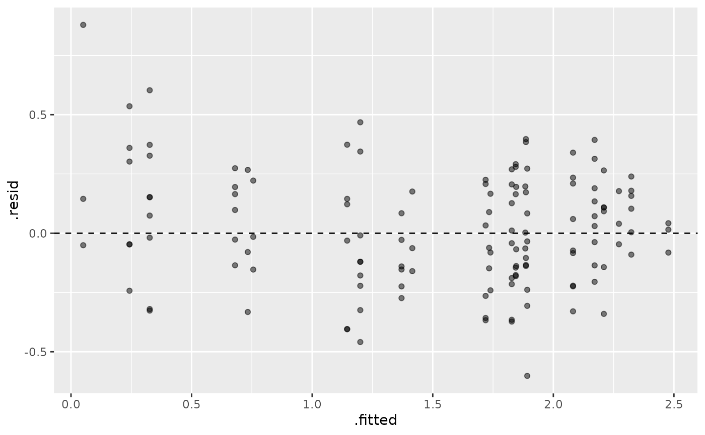

Augment a beezdemand_nlme Model with Fitted Values and Residuals
Source:R/mixed-methods.R
augment.beezdemand_nlme.RdReturns the original data with fitted values and residuals from a nonlinear mixed-effects demand model. This enables easy model diagnostics and visualization with the tidyverse.
Usage
# S3 method for class 'beezdemand_nlme'
augment(x, newdata = NULL, ...)Value
A tibble containing the original data plus:
- .fitted
Fitted values on the model scale (may be transformed, e.g., LL4)
- .resid
Residuals on the model scale
- .fixed
Fitted values from fixed effects only (population-level)
Details
The fitted values and residuals are on the same scale as the response variable
used in the model. For equation_form = "zben", this is the LL4-transformed
scale. For equation_form = "simplified" or "exponentiated", this is the natural
consumption scale.
To back-transform predictions to the natural scale for "zben" models, use:
ll4_inv(augmented$.fitted)
Examples
# \donttest{
data(ko)
fit <- fit_demand_mixed(ko, y_var = "y_ll4", x_var = "x",
id_var = "monkey", factors = "dose", equation_form = "zben")
#> Generating starting values using method: 'heuristic'
#> Using heuristic method for starting values.
#> --- Fitting NLME Model ---
#> Equation Form: zben
#> Param Space: log10
#> NLME Formula: y_ll4 ~ Q0 * exp(-(10^alpha/Q0) * (10^Q0) * x)
#> Start values (first few): Q0_int=2.27, alpha_int=-3
#> Number of fixed parameters: 10 (Q0: 5, alpha: 5)
augmented <- augment(fit)
# Plot residuals
library(ggplot2)
ggplot(augmented, aes(x = .fitted, y = .resid)) +
geom_point(alpha = 0.5) +
geom_hline(yintercept = 0, linetype = "dashed")

# }